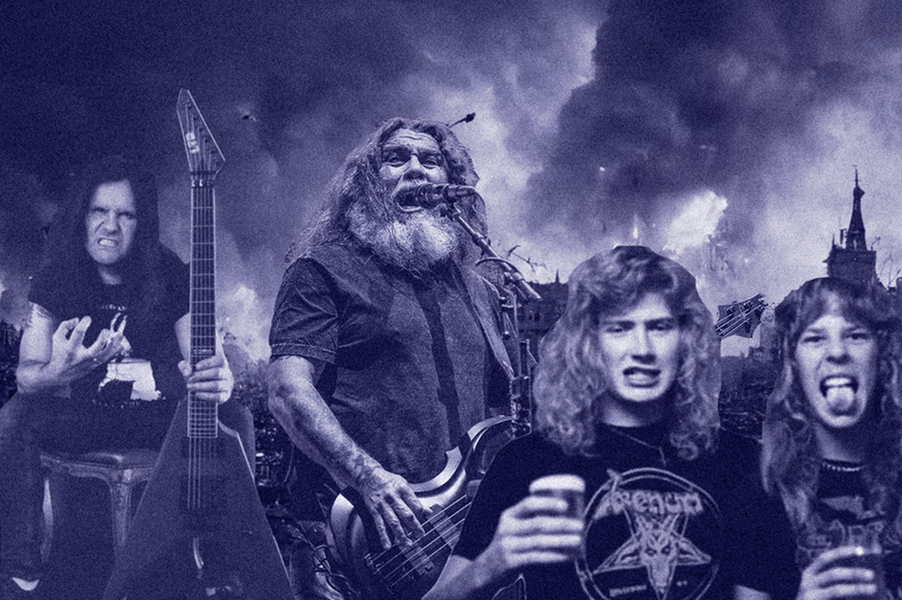

Géneros que te podrían interesar

Thrash Metal
Es un subgénero agresivo del heavy metal caracterizado por su velocidad, riffs pesados, ritmos rápidos y voces ásperas.
Ir al sitioDubstep
Se caracteriza por sus ritmos sincopados, bajos potentes y un enfoque en los ritmos graves y oscilantes, a menudo con un sonido pesado y texturizado.
Ir al sitioRock Alternativo
Es un género musical que engloba una amplia gama de estilos de rock que surgieron como una alternativa a la música rock más popular y comercial de las décadas de 1980 y 1990.
Ir al sitio